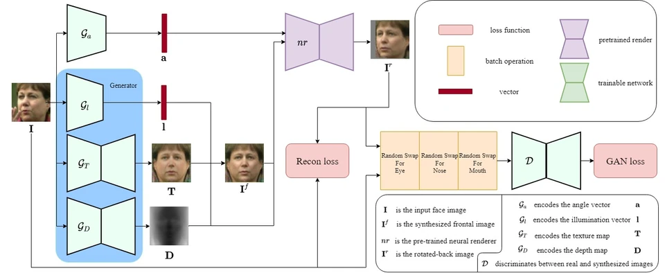
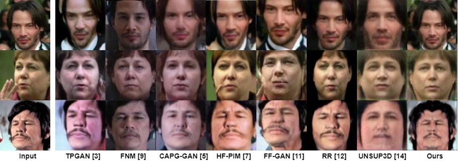
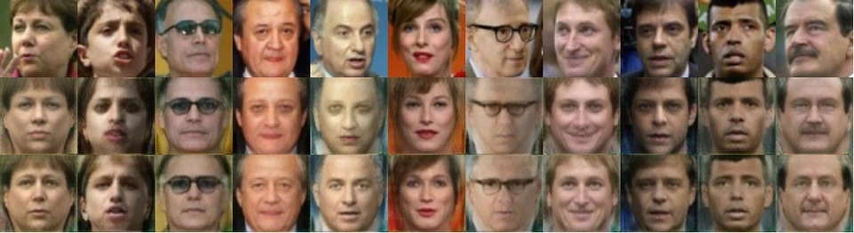

IEEE ICIP · 2022
FRGAN
Self-supervised Frontalization and Rotation GAN with Random Swap for Pose-invariant Face Recognition
FRGAN generates a frontal view without supervision from the matching frontal image. The result is rotated back towards the input pose for reconstruction and adversarial training. Random Swap exchanges facial regions between the input and reconstructed images before discrimination.
Method
The generator decomposes pose, illumination, depth, and texture to synthesise a frontal view. A pre-trained renderer rotates that view back to form a self-supervised reconstruction target.
Random Swap is not Random Mask. Here, regions are exchanged between the real and reconstructed images; the later Mask Rotate work uses a different training formulation.

Visual comparison
The original LFW figure compares face-frontalization results after training on CASIA-WebFace. It is reproduced as a complete comparison rather than cropping away the competing methods.

Ablation
The ablation isolates Random Swap within FRGAN. The displayed images illustrate its effect; the paper reports the corresponding quantitative evaluation separately in Table 1.
